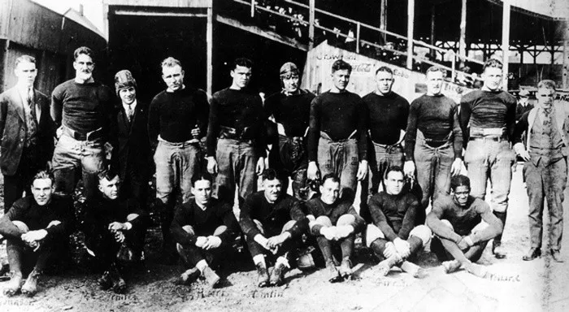

El futbol americano profesional surgió en la última década del Siglo XIX,
pero por esos años no pudo establecerse una Liga que con el paso de los
tiempos trascendiera a nivel global, pues los primeros circuitos se
trataban de campeonatos regionales que no pudieron unir esfuerzos.

Así nació una Liga que en sus primeros años pasó problemas para
establecerse como un pasatiempo nacional en Estados Unidos y que en las
primeras 13 campañas de su existencia coronaba como campeón a aquel equipo
que terminara con el mejor récord en un standing general, hasta que se
presentó un primer formato de Playoffs en 1933 con un Juego de Campeonato
como último encuentro de la temporada.Desde entonces, la NFL ha
evolucionado año con año, teniendo pasajes determinantes que la han
llevado a lo que es hoy, la Liga deportiva que más ganancias genera
alrededor del mundo y que ha tenido alcances que en 1920 jamás llegaron a
imaginarse.